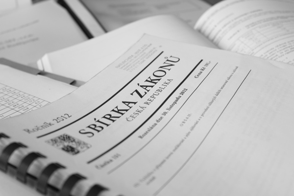
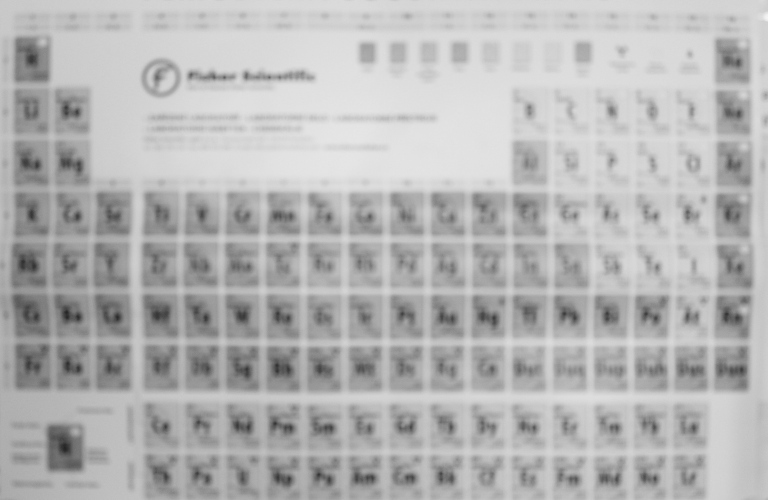
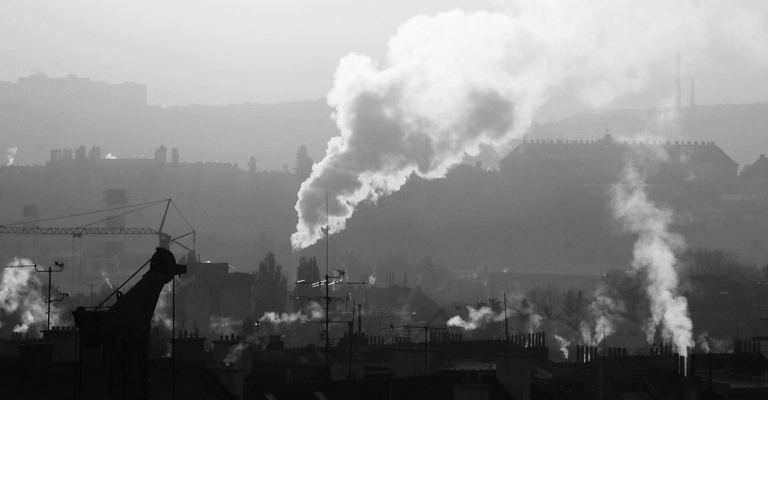
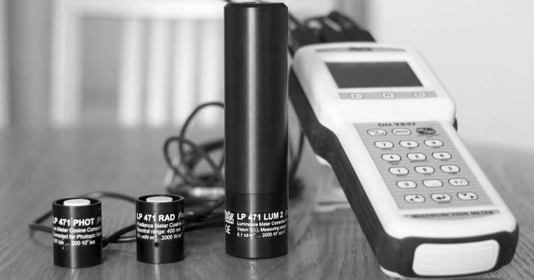

Welcome to the website of NATURCHEM ltd. We provide a comprehensive range of services in the field of environment for small, medium and large businesses. Longtime success of our company on the czech market is mainly due to the high expertise of our staff and high-quality work, which is confirmed by the satisfaction of our loyal customers.
We are an accredited laboratory CIA L1599 for physical factor measurement.

and expert's advice in chemistry, air and water management

Environmental impact assessment, Integrated pollution and prevention, expert witness, environmental baseline studies, dispersion and noise studies, greenhouse gas accounting and more

of emissions, indoor air quality, noise, vibration, illuminance, microclimatic conditions, chemical compounds of air pollutants and characterization and more ...

of high quality measuring instruments of Delta Ohm, S.l.r. and PCF Elettronica, S.l.r..